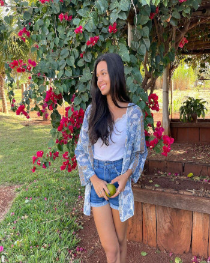
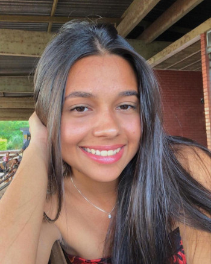
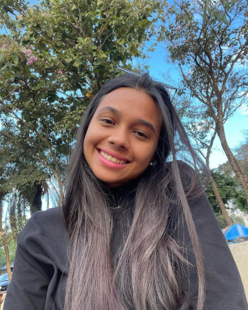
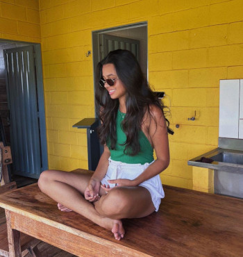
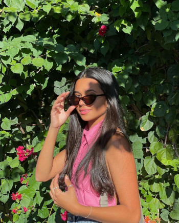
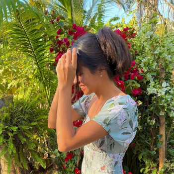

Quero começar esta história desde o início, vale ressaltar que desta vez estou usando palavras próprias
e não um poema da internet rs, vamos lá! Estão vendo essa mulher maravilhosa na foto ao lado? Pois é,
essa mulher é simplesmente a mulher mais especial que tenho na minha vida atualmente. Quer saber o por
que? Você já vai entender.🥰
Primeira vez que a vi pessoalmente eu achei uma mulher muito linda e gentil, que tem um belo sorriso, neste momento eu agi da mesma maneira em que a grande maioria das pessoas reagem normalmente. Procurei saber o instagram dela e começar a segui-la rs até ai tudo bem, ela me seguiu de volta, mas nenhum e nem outro chamou para conversar, isso ocorreu em Abril/2023, desde então fiquei somente observando, não elogiava nenhuma foto postada, não chamei para conversar também pois estava um tanto quanto inseguro rs.
Após isso não via ela na rua mais, não encontrava mais suas publicações no Instagram, estava simplesmente sem saber o que se passava na vida desta mulher hahah, até que exatamente no dia 09/Julho/2023 um anjo resolveu acender meu coração novamente. 💖 🔥
Neste dia eu fui trabalhar como garçom em um bar aqui da cidade (neste mesmo bar em que a conheci pela primeira vez), eu como um bom atendente estava sempre atento as mesas, até que um certo momento ela entra no estabelecimento, e ai eu pensei "Será que vou trabalhar ao lado dela?", após alguns minutos ela vem me comprimentar e perguntando se eu estava trabalhando ali naquele dia, eu abri um enorme sorriso no rosto (mas lembrando de manter a postura firme hahaha) e disse a ela que sim, se apresentamos um para o outro, e dai para frente começou uma linda jornada... 🤩

Antes de continuar a história contando como conheci essa linda mulher, quero ressaltar algumas coisas...
Observem esse sorriso, ele é perfeito.😍
Quando estou ao lado dela é como se ela fosse minha âncora, eu fico calmo, eu fico feliz e fico leve, pois quando estamos juntos nós brincamos, fazemos piada, fofocamos da vida dos outros, e o principal, eu sempre tento faze-la sorrir, para que assim eu possa mais uma vez ver o lindo sorriso que a pertence, e não é somente o sorriso que destaca, é seus olhos tao meigos, eu poderia ficar olhando para o seus olhos por horas. Eles são um pedacinho do céu para mim!
Quando toco em você é como se eu estivesse nas nuvens, quando sinto seu abraço é como se todos os meus problemas sumissem da minha vida...🥰

Quando você me liga para que nós fiquemos conversando por alguns minutos que seja, é um momento onde eu largo tudo que estou fazendo e quero te dar minha total atenção, isso por que quando ouço sua voz é como se existisse uma paz interna dentro de mim, por conta da sua voz doce e meiga.
É incrível que quando sentamos em qualquer lugar que seja para ficarmos conversando pessoalmente os nossos assuntos nunca acabam, é como se houvesse algo recíproco onde os dois não querem que o outro vá embora, não querem que o assunto acabe, eu estou dizendo isso por que toda vez que sento ao seu lado é como se somente você existesse na minha vida, é como se nada mais fizesse sentido, eu só quero ficar ali escutando sua voz e suas histórias.

Agora voltando ao assunto de como eu conheci essa mulher tão perfeita...
Durante essa jornada de trabalho onde nós trabalhamos juntos nesse dia, houve muitos atos fofo, onde ela se preocupava comigo, eu atendendo e com as mãos todas lotadas de copos e pratos, ela me fazia parar e colocar uma batata frita na minha boca kkkk esse momento eu não vou esquecer, teve momentos em que ela não queria me deixar sozinho e pedia para que eu sentasse do lado dela, isso tudo foi muito top nesse dia, então a partir daí a gente começou a conversar mais, sorrir, um olhar que parecia ser tão apaixonante. Então após o término de nosso expediente eu perguntei a ela se podiamos começar a conversar no Instagram, e aí foi onde tudo começou de verdade... 💝

Após esse dia não paramos mais de conversar, sabe quando sentimos que tem algum tipo de ligação entre as partes? Pois então. Conversamos todos os dias, e se possível a toda hora, e o incrivel que nunca ficamos sem assunto um com o outro, quando começamos a conversar era aquele tipo de conversa bem padrão hahah, mas após alguns dias fomos criando mais liberdade um com o outro, onde hoje a qualquer momento mandamos uma foto aleatória do nosso dia, conversamos por ligação por 20 minutos somente e depois desliga, e não posso esquecer, tem um assunto que já estou virando profissional, pois ela ama conversar sobre, e se ela ama falar disso eu também vou começar a gostar de falar sobre o tema, pois tenho que tentar agrada-lá o máximo que eu consiga, e o tema é:
Vestido, bolsa, roupa kkkk 👗
E sabe qual a melhor parte de tudo isso? É por que ela sempre fica feliz quando conversamos sobre isso. Então esse site eu criei ele com o pensamento de fazer você se sentir a pessoa mais especial que tem na minha vida, fazer você se sentir única, e amada.💖

Eu poderia simplesmente ter feito tudo isso em um arquivo Word, mas seria muito simples, e como você me disse da ultima vez "Meu Deus fiquei muito feliz por saber que meu nome esta em um site", então esse foi um dos motivos de ter feito por aqui, e também para que você saiba que estou aqui para te apoiar a qualquer momento, estou aqui por você, quero te lembrar novamente o quão especial você é em minha vida.
Tenho sorte de ter uma mulher tão visionária, linda, charmosa e sofisticada na minha vida!💖🥰
Quero agradecer você a cada momento que você já passou ao meu lado, cada momento em que você me fez tornar um homem mais forte, quero te agradecer por você ter aparecido na minha vida.